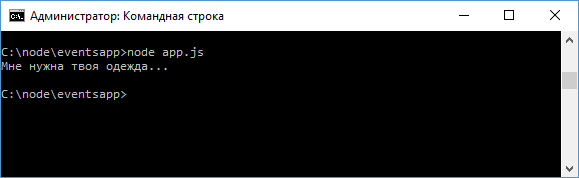

События стр.2
Наследование от EventEmitter
В приложении мы можем оперировать сложными объектами, для которых также можно определять события, но для этого их надо связать с объектом EventEmitter. Например:
const
util = require("util");
const EventEmitter = require("events");
function User(){
}
util.inherits(User, EventEmitter);
let eventName = "greet";
User.prototype.sayHi = function(data){
this.emit(eventName, data);
}
let user = new User();
// добавляем к объекту user обработку события "greet"
user.on(eventName,
function(data){
console.log(data);
});
user.sayHi("Мне нужна твоя одежда...");
Здесь определена функция конструктора User, которая представляет пользователя. Для прототипа User определяется метод sayHi, в котором генерируется событие "greet". Но чтобы связать объект User с EventEmitter, надо вызвать функцию util.inherits(User, EventEmitter);. Она позволяет унаследовать классу User функционал от EventEmitter. Благодаря этому мы можем через метод on() добавить к событию объекта user какой-нибудь обработчик, который будет вызван при выполнении метода user.sayHi().

С помощью возможностей ES6 мы можем упростить выше пример:
const
EventEmitter = require("events");
let eventName = "greet";
class
User extends EventEmitter {
sayHi(data) {
this.emit(eventName, data);
}
}
let user = new User();
// добавляем к объекту user обработку события
"greet"
user.on(eventName,
function(data){
console.log(data);
});
user.sayHi("Мне нужна твоя одежда...");
Результат будет тот же, но теперь не нужно использовать функцию util.inherits. пример: